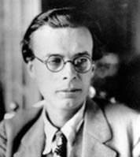

(1894 – 1963)

Yazar Aldoux Huxley'nin, geçmişinde birçok bilim insanı ve sanatçı olan bir ailede başlayan İngiliz tarzı yaşamı, Los Angeles'taki evinde Amerikan tarzı bir ölümle sonuçlanmıştı. "Cesur Yeni Dünya" romanında bize insanlığı bekleyen gelecekten ipuçları veren yazar, "Ada" adlı romanında ise bizi açıkça uyarıyordu: Gelecek huzurda olmak zorundadır...
Tam adı Aldoux Leonard Huxley olan dünyaca ünlü İngiliz şair ve yazar Aldous Huxley (okunuşu: Alduz Haksliy) 26 Temmuz 1894'te Britanya'nın Surrey kentinde dünyaya geldi. Ailesi birçok bilim insanı ve sanatçı yetiştirmiş bir aileydi. Darwin'in ateşli savunucularından ünlü biyolog Thomas Henry Huxley'nin torunu, yine ünlü biyolog Sir Julian Huxley'nin kardeşiydi. Annesi, şair ve denemeci Matthew Arnold'ın yeğeniydi. Babası Leonard Huxley ise Cornhill dergisinin sahibi ve yöneticisiydi. Bilimi ve edebiyatı birleştiren bu entelektüel miras Huxley'nin dünyaya bakışının temelini oluşturdu. 1908-1914 yılları arasında yaşadığı üç sarsıcı olay (annesinin ölümüyle ailesinin dağılması, Eton'da öğrenciyken onu neredeyse kör olma noktasına getiren göz hastalığı ve kardeşinin intiharı) Huxley'nin tüm gençliğini etkiledi ve hayatında silinmez izler bıraktı. Yazar, yaşamının sonuna kadar göz hastalığıyla savaşmak zorunda kaldı. Romanları Antic Hay (1923), Şu Kısır Yapraklar (1925) ve Ses Sese Karşı (1925) Huxley'nin çağdaş toplumun kusurlarını zekice olduğu kadar acımasızca yargıladığı dâhiyane taşlamalardır. En bilinen eseri olan Cesur Yeni Dünya'nın (1932) da aralarında bulunduğu birçok romanında, yazarın II. Dünya Savaşı öncesinde tehlikeli bir şekilde kontrolden çıkmakta olduğunu hissettiği toplumun karmaşasına gösterdiği düşünsel tepkiler kolaylıkla hissedilebilir.
1916-1920 yılları arasında daha çok Fransız simgeci akımının etkisini taşıyan şiirlerden oluşan dört kitap yayımladı. Askerlikten muaf tutulan Huxley, bir süre bir çiftlikte tarım işçisi olarak çalıştı. 1919'da Maria Nys ile evlendi. Kısa öykülerinin yer aldığı Limbo'dan (1920) sonra kendisini üne kavuşturan Krom Sarısı (1921) adlı ilk romanı yayımlandı. Amerikalı yazar F. Scott Fitzgerald romanı övgüyle karşıladı. 1923'ten sonraki yıllarının büyük bölümünü İtalya'da geçiren Huxley 1930-1937 arasında Güney Fransa'da yaşadı. 1925'te yayımlanan romanı Şu Kısır Yapraklar'ı şair W. B. Yeats "felsefenin İngiliz romanına geri dönüşü" olarak değerlendirdi.
Huxley'nin ilk "fikir romanı" sayılan Ses Sese Karşı (1928) ününü daha da pekiştirdi. Ama onu asıl üne kavuşturan Cesur Yeni Dünya (1932) adlı füturist yergi romanı oldu. Huxley 1937'de ABD'ye gitmek üzere Avrupa'dan ayrıldığında ününün doruğundaydı. Aynı yıl, ikliminin gözlerine iyi geleceği inancıyla Kaliforniya'ya yerleşti ve ölünceye kadar orada yaşadı. 1954 yılında yayımlanan Algı Kapıları ve devamı niteliğindeki Cennet ve Cehennem (1956) geniş yankılara yol açtı. Kitap "beat kuşağı"nın başucu kitaplarından biri oldu. Ünlü şarkıcı Jim Morrison'ın "The Doors" topluluğu adını bu kitaptan esinlenerek aldı, ayrıca yapıt The Beatles'ın Sergeant Pepper albümüne esin kaynağı oldu. 1955'te yazarın eşi Maria Huxley öldü. Aldous Huxley, bir yıl sonra psikoterapist Laura Archera ile evlendi.
1958 yılında, Cesur Yeni Dünyayı Ziyaret yayımlandı. 1962'de yayımlanan Ada son romanıdır. Aynı yıl Los Angeles'taki evi yandı. Huxley, kendi sözleriyle artık "mülksüz ve geçmişi olmayan" bir adamdı. Aldoux Huxley, 22 Kasım 1963'te Hollywood'daki evinde hayata gözlerini yumdu.
Seçme Romanları: Limbo (1920), Krom Sarısı (1921), Ses Sese Karşı (1925), Şu Kısır Yapraklar (1925), Cesur Yeni Dünya (1932 – İthaki Yayınları, 2012), Kalıcı Felsefe (1946), Maymun ve Öz (1948), Algı Kapıları (1954 – İmge Kitabevi Yayınları, 2012), Cennet ve Cehennem (1956), Cesur Yeni Dünyayı Ziyaret (1958), Ada (1962 – Ayrıntı Yayınları, 1999)